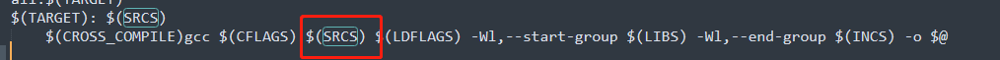
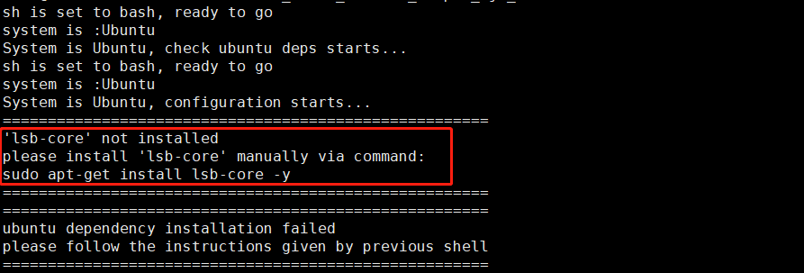

2. 环境部署
本节介绍使用工具链的必要环境准备工作，包含 开发机部署 和 开发板部署 两个部分。
2.1. 开发机部署
对于开发机的环境部署，地平线支持使用Docker和手工安装两种方式，您只需要选择其中一种即可。
提示
地平线强烈建议您使用Docker方式，以避免在安装过程中出现问题。
2.1.1. 开发机准备
为了顺利地使用工具链，地平线建议您选择的开发机应满足以下要求：
硬件/操作系统 |
要求 |
|---|---|
CPU |
CPU I3以上或者同级别E3/E5的处理器 |
内存 |
16G或以上级别 |
GPU |
CUDA11、驱动版本Linux:>= 450.80.02* 适配显卡包括但不限于： 1)GeForce RTX 3090 2)GeForce RTX 2080 Ti 3)NVIDIA TITAN V 4)Tesla V100S-PCIE-32GB |
系统 |
CentOS 7、Ubuntu 18.04 |
更多关于CUDA与显卡的兼容性问题请参考 NVIDIA官网信息 。
此外，嵌入式开发需要安装交叉编译工具，请从 /ddk/tools 目录下获取：
ddk/tools
├── gcc-ubuntu-9.3.0-2020.03-x86_64-aarch64-linux-gnu.tar.xz
并将其解压到开发机的 /opt 目录下。
另外您需要在环境中新增一个变量 LINARO_GCC_ROOT，值为交叉编译器的完整路径，参考如下：
export LINARO_GCC_ROOT=/opt/gcc-ubuntu-9.3.0-2020.03-x86_64-aarch64-linux-gnu
备注
环境变量 LINARO_GCC_ROOT 的设置路径需要与交叉编译工具解压的目录相同，否则会导致失败。
对于host端（x86）依赖的库，比如isl,gmp,mpc,mpfr等，在lib/x86_64-linux-gnu下，如果编译报错， 请在编译工程中通过LD_LIBRARY_PATH来指定。
如果编译过程中出现glibc库版本冲突的问题，例如：xxx@GLIBC_xxx的未定义符号的错误， 请在编译工程中通过-rpath-link来指定到工具链的aarch64-linux-gnu/lib路径下, 同时在编译工程中加上-lxxx, 例如：-lpthread。
另外需要特别注意的是下图框起来的记录源文件的变量SRCS，最好放在${LIBS}链接库的前面，不然也会报未定义的符号。

2.1.2. 使用Docker
为了帮助您快速使用工具链提供的模型处理方案，地平线提供了包含完整开发环境的Docker镜像，大大简化了环境部署过程。
在阅读此部分内容前，我们希望您的开发机中已经预装好了Docker的基础环境。 地平线要求的Docker基础环境信息如下：
Docker（>=1.12 建议安装18.03.0-ce）, 安装手册 https://docs.docker.com/install/。
NVIDIA Docker（2.0.3），安装手册 NVIDIA/nvidia-docker。
完成Docker环境安装后，需要将无root权限的用户添加到Docker用户组中。参考如下命令：
sudo groupadd docker
sudo gpasswd -a ${USER} docker
sudo systemctl restart docker # Ubuntu
# re-login
请从 地平线天工开物cpu docker hub
获取最新的Docker镜像。
镜像文件命名形式为 openexplorer/ai_toolchain_centos_7_j5:{version}。
备注
执行命令时将 {version} 替换为您获取到的版本号。
每个镜像文件在第一次使用前，需要拉取镜像，命令如下：
docker pull openexplorer/ai_toolchain_centos_7_j5:{version}
下载天工开物发布包（下称OE包，OE即OpenExplorer的缩写）和评测数据集：
# 下载OE包
wget ftp://vrftp.horizon.ai/Open_Explorer/{version}/horizon_j5_open_explorer_{version}_{date}.tar.gz
# 下载评测数据集，此处以cifar-10数据集为例
wget ftp://vrftp.horizon.ai/Open_Explorer/eval_dataset/cifar-10.tar.gz
# 解压OE包和评测数据集
tar -vxf horizon_j5_open_explorer_{version}_{date}.tar.gz
tar -vxf cifar-10.tar.gz
备注
执行上述命令时，请将
{version}和{date}替换为最新的版本，详情咨询地平线技术团队。评测数据集地址为：
vrftp.horizon.ai/Open_Explorer/eval_dataset。目前包含以下数据集：
/Open_Explorer/eval_dataset
├── VOC.tar.gz
├── imagenet.tar.gz
├── coco.tar.gz
├── cityscapes.tar.gz
└── cifar-10.tar.gz
# 将目录切换至解压后的OE包
cd horizon_j5_open_explorer_{version}_{date}
# 创建data路径，并将上面解压缩后的评测数据集（此处仍以cifar-10为例）放到data路径下
mkdir data
mv cifar-10/ data
# 运行该路径下的run_docker.sh脚本，并显式挂载解压后的cifar-10数据集
sh run_docker.sh data
备注
data 为数据集文件目录，如果该目录不存在会导致加载问题，需要创建好后再运行命令。
至此，您就已经成功通过Docker镜像进入了完整的工具链开发环境。
您可以键入 hb_mapper 命令验证下是否可以正常得到帮助信息，hb_mapper 是工具链的一个常用工具，
在后文的模型转换部分对其有详细介绍。
2.1.3. 手工安装环境
在执行手动安装前，我们希望您的操作环境满足如下软件环境要求：
操作系统: CentOS7 或者 Ubuntu18.04
Python3.6
libpython3.6
python3-devel
python3-pip
gcc&c++: 5.4.0
graphviz
确认满足以上条件后，手工安装过程需要您完成 AI工具安装 。
AI工具安装
AI工具安装涉及到系列内部工具安装，OE包中已经将安装过程打包为一个安装脚本。 在发布包中进入到 ddk/package/host，执行以下命令启动安装：
bash install_ai_toolchain.sh安装脚本会自动检查相应的环境，缺少相应依赖或配置会中断安装过程，并给出修正建议如下图。
根据建议补充依赖后，重新执行install脚本即可。
注意
如果修正建议指出是gcc/g++版本不符合要求，在安装完指定版本之后，您需要重新建立gcc和g++软链接为gcc-5.4.0和g++-5.4.0。
在顺利完成install脚本后，您可以键入
pip show horizon_nnandpip show horizon_tc_ui命令验证下模型转换工具是否被正确安装。
2.2. 开发板部署
开发板部署需要您先准备好一块烧写好系统镜像的开发板，再将相关补充文件拷贝到开发板中即可。
2.2.1. 开发板准备
此阶段需要验证下开发板的可用性，将可用系统镜像烧写到开发板中。 具体过程请参考 《地平线J5芯片开发手册》。
2.2.2. 补充文件准备
工具链的部分补充工具未包含在系统镜像中，这些工具已经放置在OE包中， 进入到 ddk/package/board 执行install脚本即可。 执行命令如下：
bash install.sh ${board_ip}
备注
其中，${board_ip} 是您为开发板设置的IP地址，请确保在开发机上可以访问该IP。
成功安装后，重新启动开发板，在开发板上执行 hrt_model_exec --help 可以验证安装是否成功。